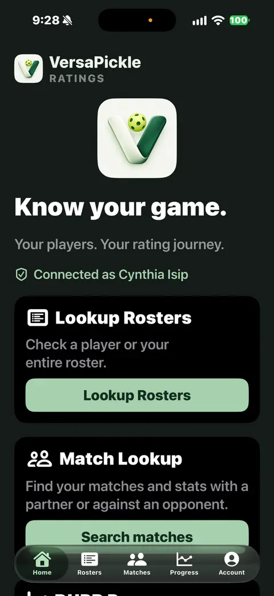
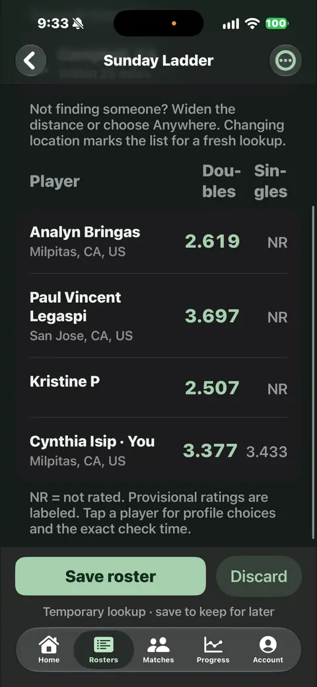
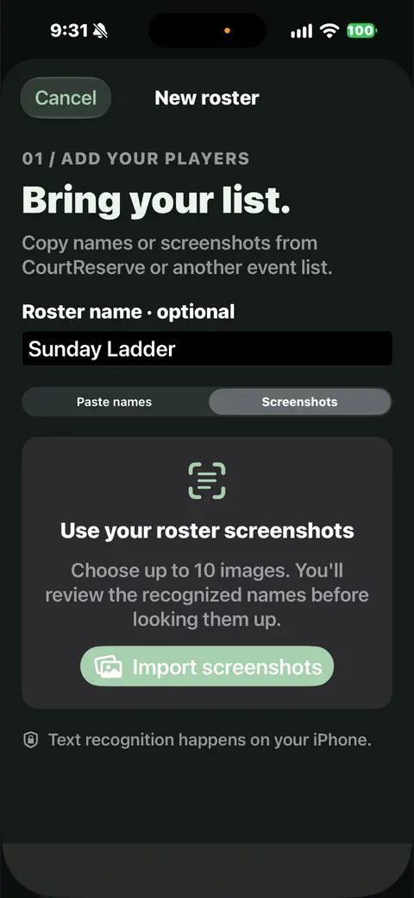
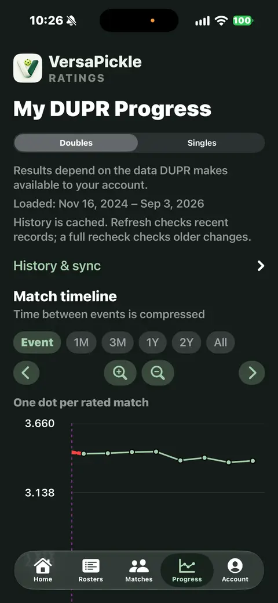
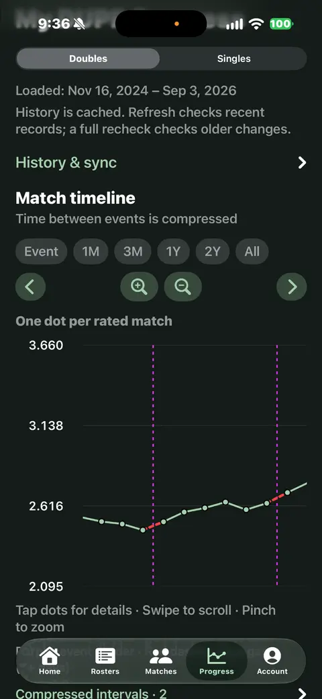
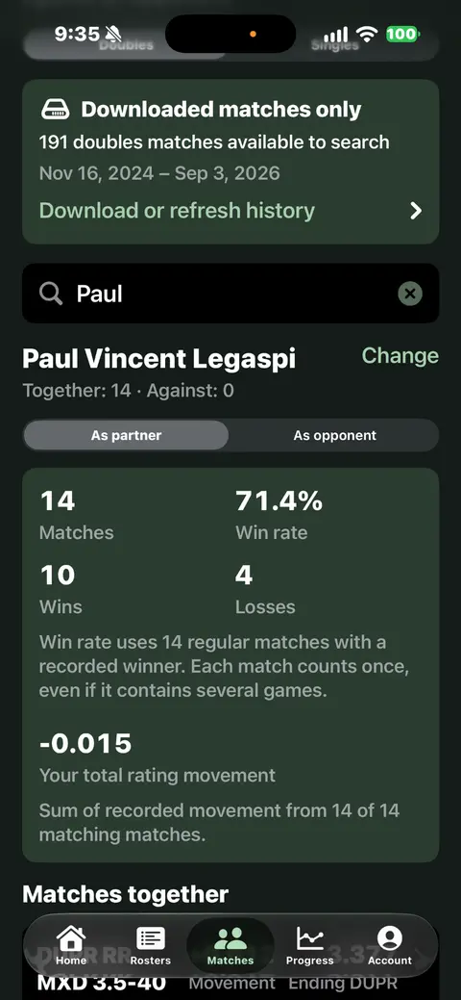
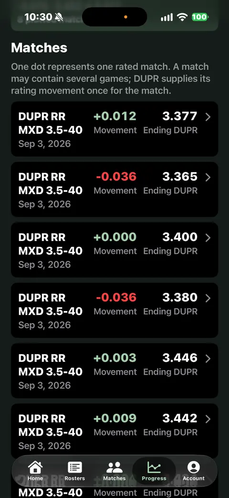

{kind=link}
{kind=link}
{kind=link}
{kind=link}
{kind=link}
{kind=link}
Lookup Rosters
Paste names or import up to 10 roster screenshots. Review the recognized names, choose between matching profiles, and narrow a search by location or use Anywhere. Save a roster on your phone, refresh its ratings, or export it as CSV.
Know your players.
See your progress.
Bring a roster. Follow your rating journey. Look back at the people you play with. Three focused tools for exploring the DUPR data available to you.
Preparing for release. Not yet available on the App Store.
Use your own DUPR account for live data, or explore fictional sample data in the app’s demo. No separate VersaPickle account needed.

A look inside
Actual iPhone screens from the development app. Swipe or scroll through the gallery, or select a screen to see it larger.
Screens show the full Ratings toolkit. See the planned free and Ratings Plus features below. Layouts may change before release.






The Ratings toolkit
For the questions you ask before you play—and the numbers you want to understand afterward.
Paste names or import up to 10 roster screenshots. Review the recognized names, choose between matching profiles, and narrow a search by location or use Anywhere. Save a roster on your phone, refresh its ratings, or export it as CSV.
Switch between singles and doubles, choose a date range, and zoom or scroll through your available history. Open a match to see its details, rating movement, and ending rating. History & sync shows what you have downloaded.
Search downloaded matches for a player. See when you partnered up or played against each other, along with match counts, wins, losses, win rate, and available rating movement. Results reflect the history on your phone.
Get to know the app
The interactive demo lets you explore fictional players, an editable sample roster, and 40 sample matches. Try the charts, partner searches, screenshot text recognition, and CSV export from the same app screens.
In the iPhone app, tap Connect your DUPR account on Home. Leave the sign-in fields blank.
Tap Try Demo without signing in. The Demo mode banner confirms you are using fictional data.
Try Rosters, Progress, and Matches. Tap Exit Demo to return to your real account. Demo changes stay separate from your saved data.
Prefer to hide the shortcut? Go to Account → Demo → Show demo on Home. Your choice is remembered. By default, the shortcut is hidden once a real DUPR account is linked.
Demo help and sample activitiesPlanned for launch
The planned release includes a free tier and an optional one-time Ratings Plus purchase. The final price will be shown in the app before purchase.
| Feature | Free | Ratings Plus |
|---|---|---|
| Roster lookup | 3 other players per roster, plus your own profile | Up to 60 names per roster |
| Rating progress | Latest 5 downloaded matches, across singles and doubles combined | All downloaded history available to your DUPR account |
| Older history | Recent-match refresh | Load older batches and run a full history recheck |
| Match Lookup | Fictional sample preview | Search your downloaded partner and opponent matches |
| Purchase | No purchase required | One-time unlock; Restore Purchases included |
Ratings Plus is planned for one DUPR account. Restore with the same Apple Account and the same DUPR account. It unlocks app features; it does not expand your DUPR access or guarantee complete historical records. Launch features and availability are being finalized.
About Ratings Plus and restoring a purchaseConnect your own DUPR account for live data, or try the demo without credentials. No additional VersaPickle sign-up.
Downloaded matches stay on your device. Searching saved matches and exploring the graph do not request more data from DUPR.
Demo rosters and matches are fictional and temporary. Exiting or resetting the demo leaves your real account, rosters, and history intact.
VersaPickle can only display and analyze data DUPR makes available to your connected account. Data coverage and your app tier determine the results you can explore.
Read about data availability and responsible useVersaPickle Ratings is an independent VersaGal Digital app. It is not affiliated with or endorsed by DUPR or CourtReserve. DUPR supplies the ratings; VersaPickle helps you explore the available records.